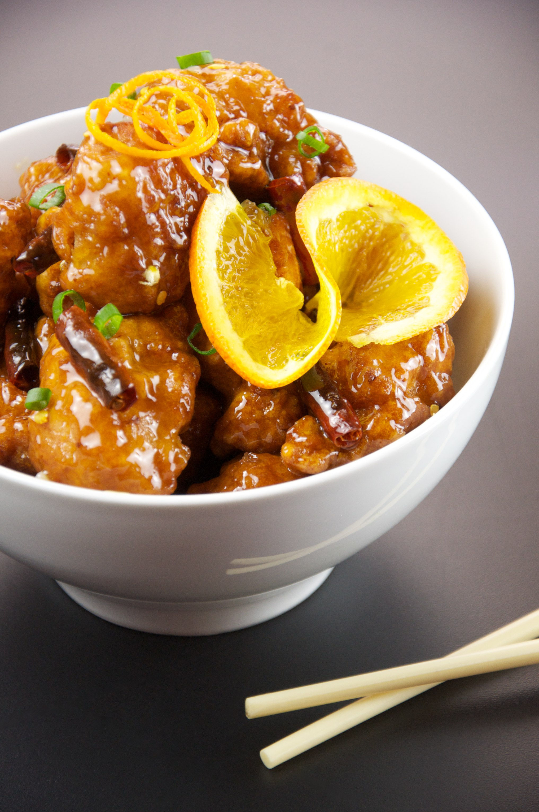

Orange Chicken

Orange chicken is an American Chinese dish of fried chicken in a sweet orange-flavoured chili sauce glaze.
Ingredients
Chicken:
- 4 boneless, skinless chicken breasts, cut into bitsized pieces
- 3 eggs, whisked
- 1/3 cup cornstarch
- 1/3 cup flour
- Salt
- Oil, for frying
Orange Chicken Sauce:
- 1 cup orange juice
- 1/2 cup sugar
- 2 tbsp rice vinegar
- 2 tbsp soy sauce
- 1/4 tsp ginger
- 2 garlic cloves, finely diced
- 1/2 tps red chili flakes
- orange zest from 1 orange
- 1 tbsp cornstarch
Preparation
To make Orange Sauce
- In a medium pot, add orange juice, sugar, vinegar, soy sauce, ginger, garlic, and red chili flakes and bring to a simmer.
- In a small bowl whisk 1 tbsp of cornstarch with 2 tbsp of water to form a paste. Add to orange sauce and whisk together. Continue cooking the sauce until it begins to thicken. Once thickened, remove from heat and add orange zest.
To make Chicken
- Place flour and cornstarch in a shallow dish. Add a generous pinch of salt.
- Whisk eggs in a shallow dish.
- Dip chicken pieces in egg mixture and then flour mixture.
- Heat 2 - 3 inches of oil in a heavy-bottomed pot over medium-high heat. Use a thermometer to ensure it reaches 350 degrees.
- Working in batches, cook several chicken pieces at a time. Cook for 2 - 3 minutes, turning often until golden brown. Place chicken on a paper towel lined plate. Repeat.
- Toss chicken with orange sauce. Reserve some of the sauce to place on rice.
Home